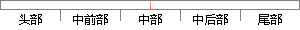

Cox回归模型是由英国统计学家D.
片段位置图

相似结果|
相似片段 1：的表达式∞】。因此对原始数据分布拟合目前国内尚未见有报道，生存数据分析也未采用这两种模型。3。2半参数Cox回归模型英国生物统计学家D．R．Cox[”1于1972年首次提出比例风险模型
相似片段 2： regressionmodel），简称 Cox 回归模型。该模型由英国统计学家 D.R.Cox于 1972年提出，是一种能处理预后因素多且观察时间长而难以控制的生存资料的比例风险模型，能够分析各因素的作用
相似片段 3：由于上述优点，该模型自1972年英国统计学家DRCox提出以来，在生存分析中得到了广泛的应用。但Cox比例风险模型，要求资料满足模型的两个假定．即要求具有不同回归向量的风险函数之比不随时间而改变
相似片段 4：影响分析的对数Logistic回归模型¨川以及对数BurrXII回归模型¨21等。2半参数回归2．1 Cox比例风险模型英国统计学家SirDavidCox于1972年首次提出了比例风险半参数回归模型
相似片段 5：回归模型[1妇由英国统计学家DRCox于1972年提出，主要用于肿瘤和其他慢性病的预后分析。Cox回归模型在生存分析中有十分广泛的应用，利用该模型可以分析各种可能导致死亡的影响因素与生存期的定量关系
相似片段 6：］。3.2.1、Cox比例风险模型 英国统计学家Sir DavidCox于1972年首次提出了比例风险半参数回归模型(简称为Cox模型)。与传统的参数回归和非参数回归方法相比，Cox模型能够量化地作多因素预后
相似片段 7：给出了在单位时间内的死亡风险，在生存数据中起着非常重要的作用。1972 年英国生物统计学家 D.R.COX 提出了在基准危险率函数未知的情况下模型参数的估计方法，称为 COX 比例风险回归模型。COX
相似片段 8：函数，‰(f)为基准风险函数，是与时间有关的任意函数。英国统计学家D．RCox提出了参数的估计和检验方法，故称为Cox回归。利用风险函数和生存函数的关系式(4．4)，得到如公式(4．6)所示，通过此公式
相似片段 9：比例风险模型(Coxpr portionalhazardsegressionmodel)。Cox比例风险模型是英国统计学家SirDavidCox于1972年提出，无需对基准风险函数做任何限制，简称为
相似片段 10：，英国统计学家D．R．Cox于1972年提出的，简称Cox回归。这是一种多因素分析方法，特别适用于分析带有截尾生存时间的资料，同时分析众多因素对生存期的影响，且不要求估计资料的生存函数的分布类型。由于
|
※ 片段修改建议 ※
近似词参考：- 模型：模子
系统自动生成语句：Cox回归模子是由英国统计学家D.
注：本片段修改建议为系统自动生成，仅供参考。